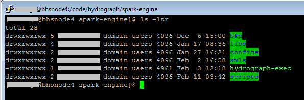
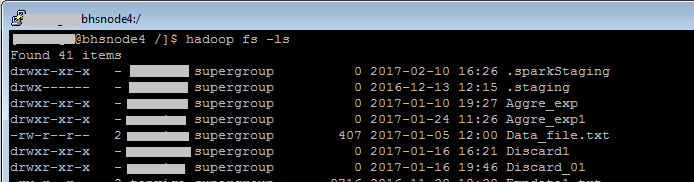
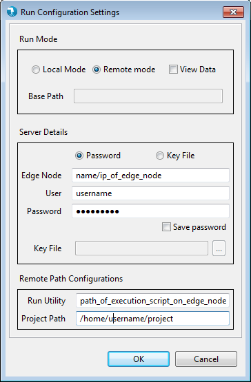
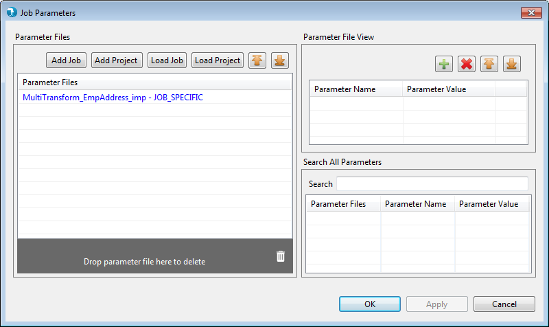

How to Run a Job on Cluster
To Run a job on cluster, make sure that you have a working job. Check whether the bhs_hadoop utility along with other configuration files/jars is present at the location you wish to run the job on cluster. The bhs_hadoop utility is used to run the job submitted by Hydrograph UI. It communicates with the Hydrograph Engine and returns appropriate values for the job to run successfully on the UI.

Move the Input files that are required by your job to appropriate folder on the cluster

Click on Run button or press Ctr+R and select Remote. This will expand the window
User is required to pass the below details
.

Click on Ok. Provide parameter values if any in the parameter grid and click OK.

Watch Job Run log in the console and wait for the build to complete successfully.